Market Bully
A furious street-market chef who swings a giant burger. The first boss players meet in the city.


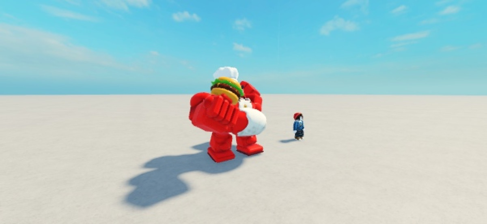


Elison Inc. / RiftHouse Studio / Roblox
RiftHouse Studio is the Roblox game team at Elison Inc. This page shows the characters and props we have built so far for two games in development: Cómetelo!, a monster-eats-the-city game, and Something's Changed, a spot-the-difference horror game. Everything here is work in progress from our private test builds.
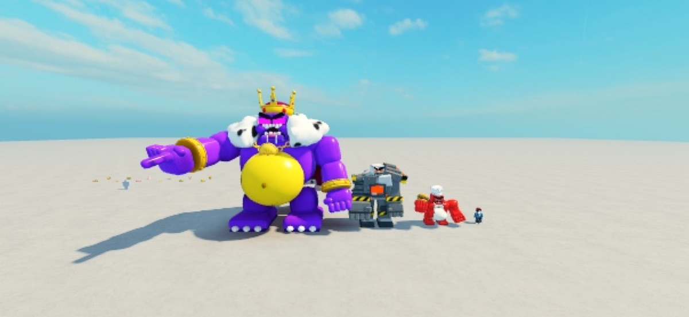
Cómetelo!
Three rigged, animated bosses, each built to read instantly on a phone screen. Players grow by eating the city, then fight each boss until its health bar is empty before they can eat it.
A furious street-market chef who swings a giant burger. The first boss players meet in the city.

A walking construction site: cracked concrete, hazard stripes and a glowing furnace core.
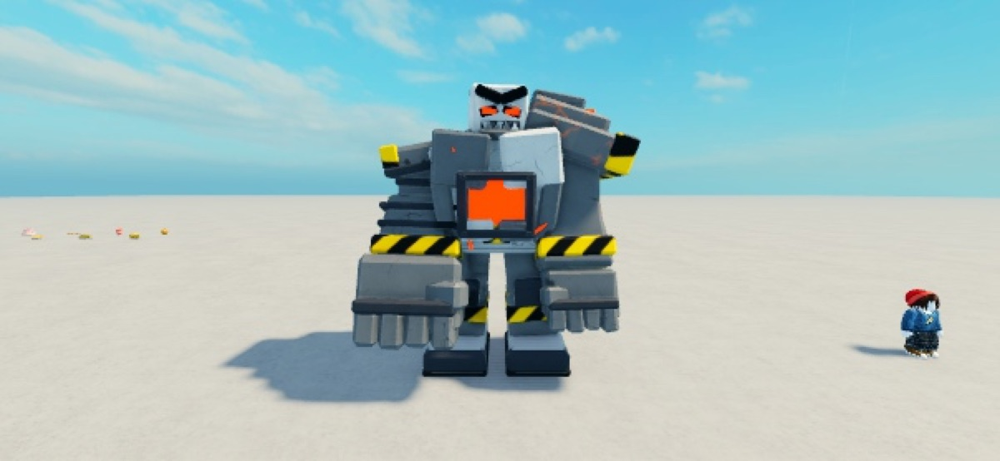
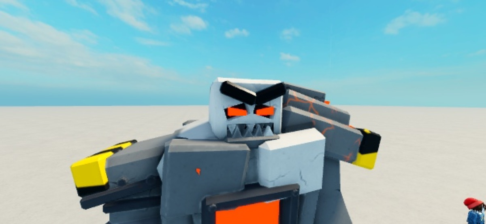


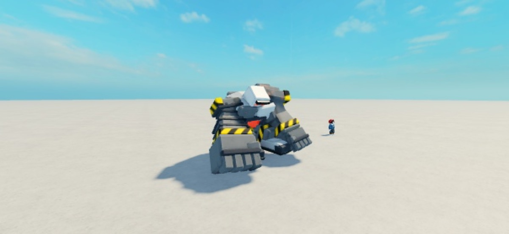
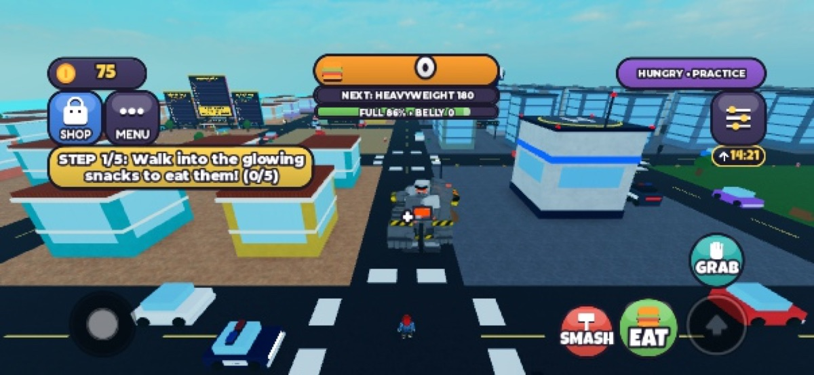
The king of the first world. Huge, royal and hungry, with a crown, fur cape and gold belly.

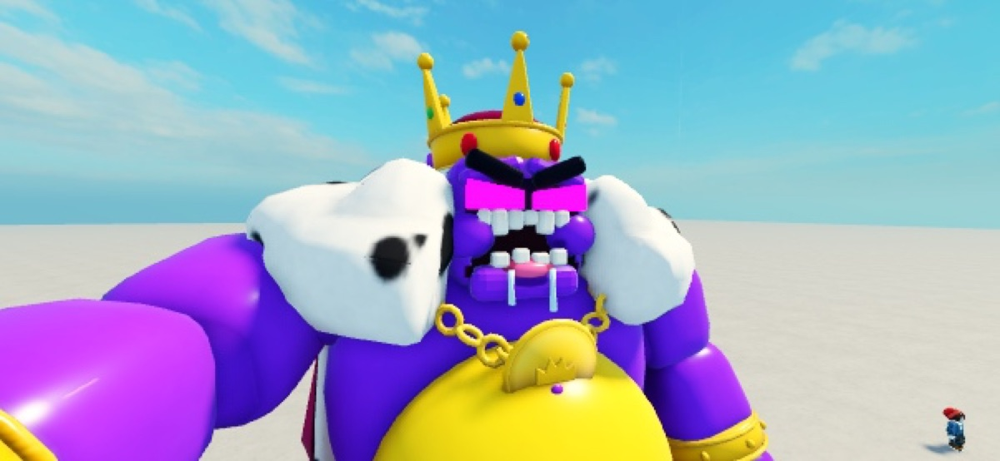
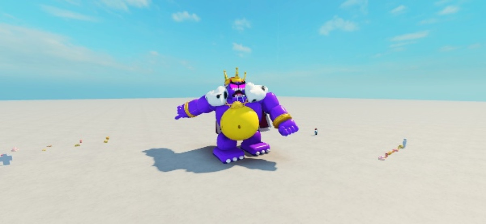


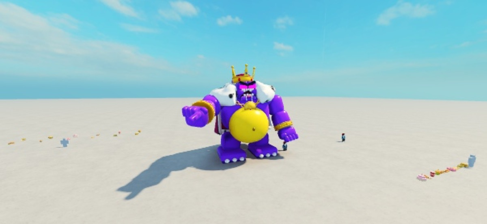
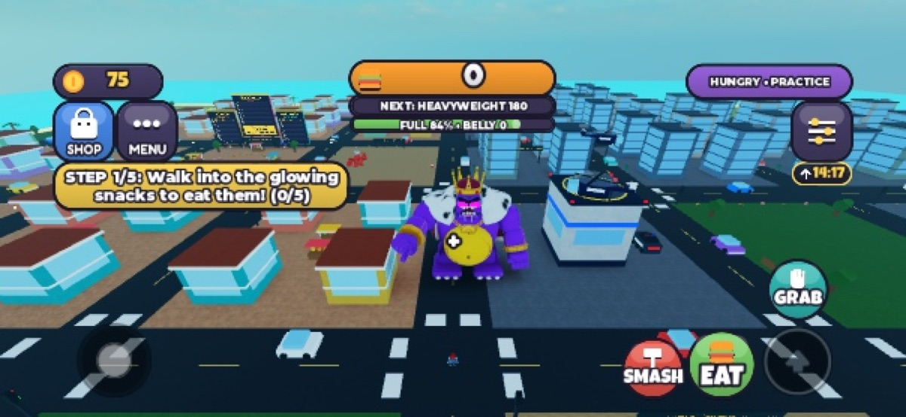
Cómetelo!
Eleven food props modeled in Blender around a Latin street-food theme, each with a single material and kept light enough for phones. The burger came first and set the standard for the rest.
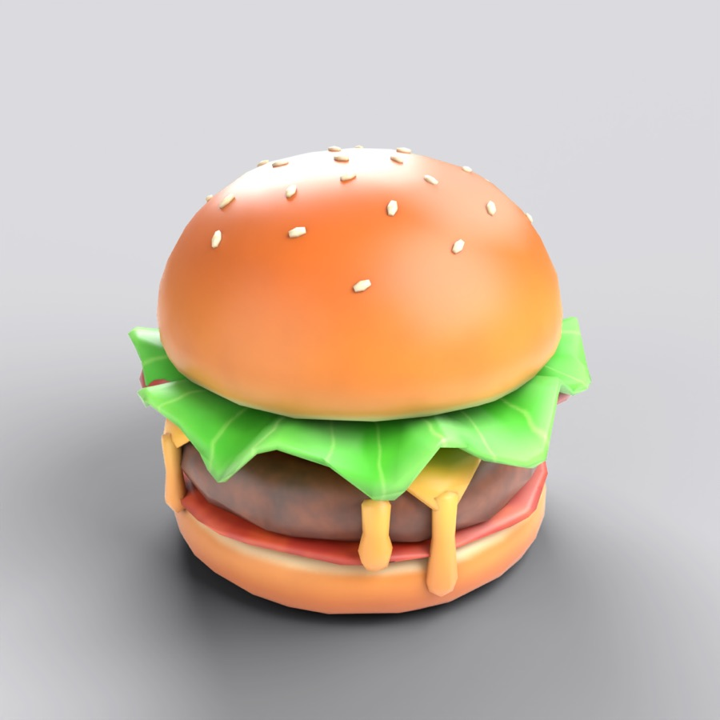
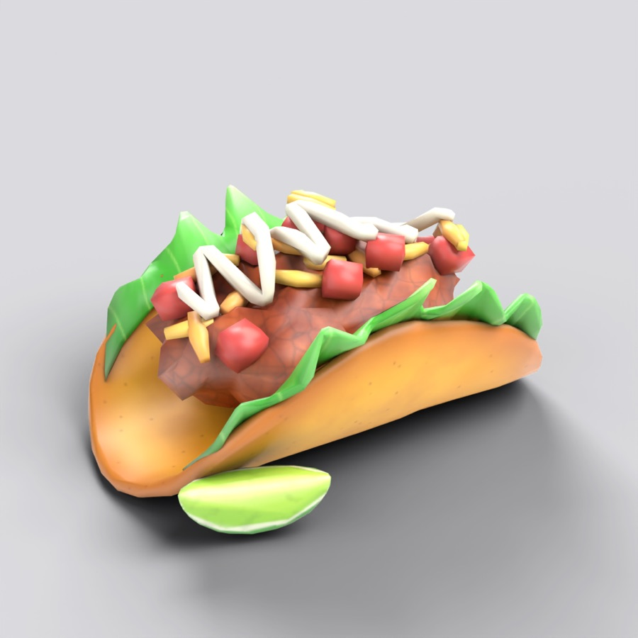

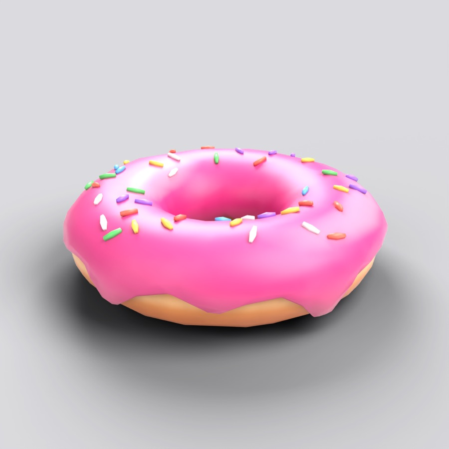
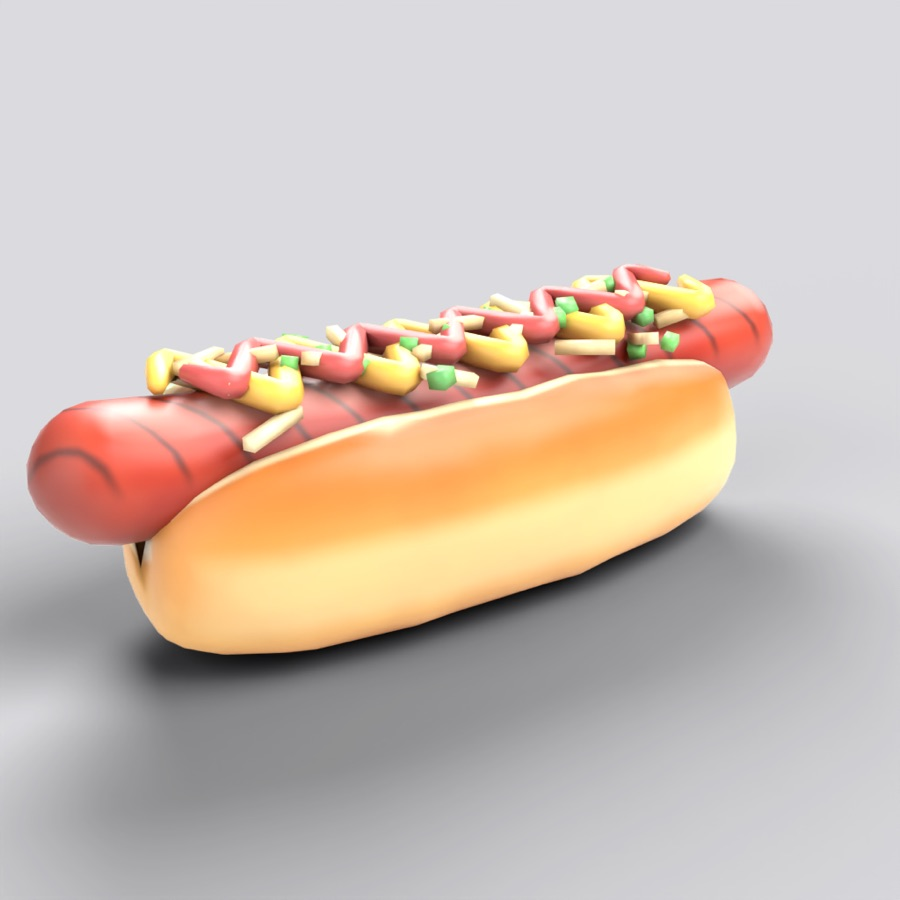

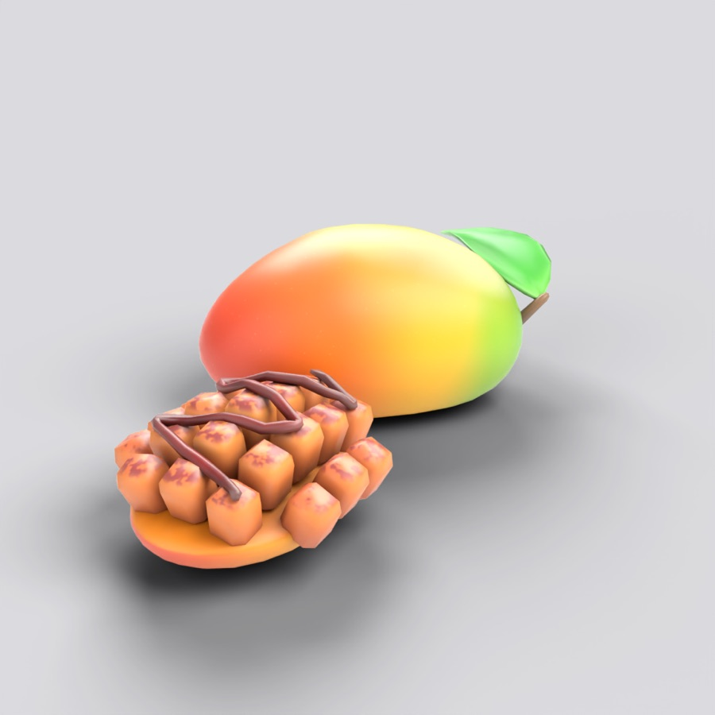
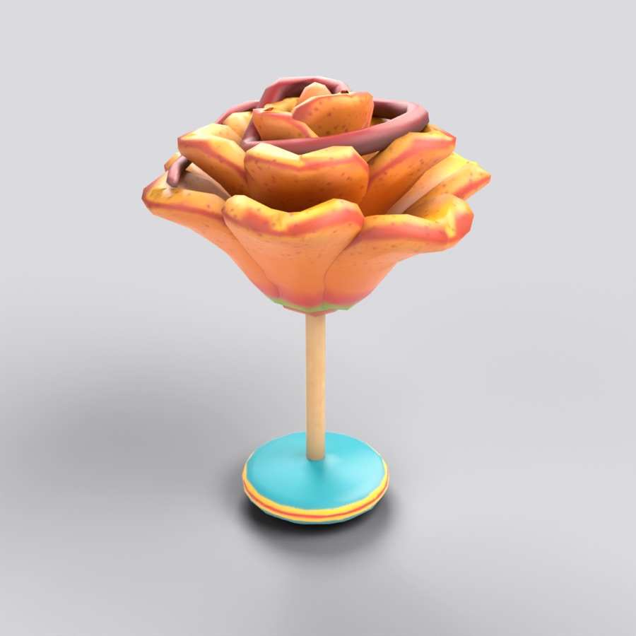
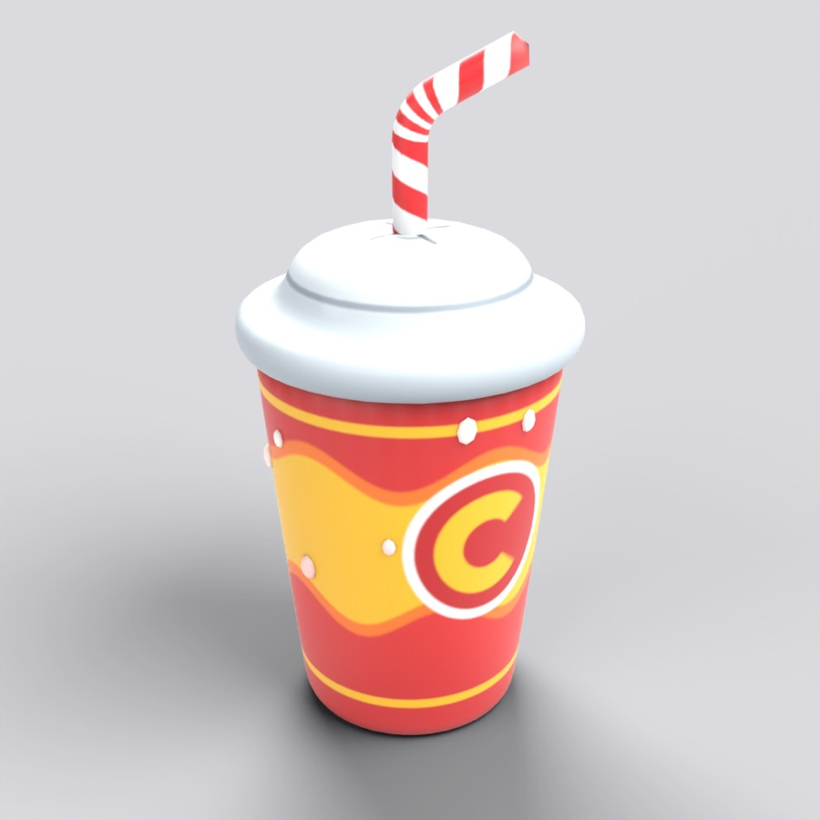


Something's Changed
Concept turnarounds (front, side and back) for the three creatures that haunt the rooms in Something's Changed. The low-poly game models are built from these.
Progress
Questions about this work: info@elisoninc.com